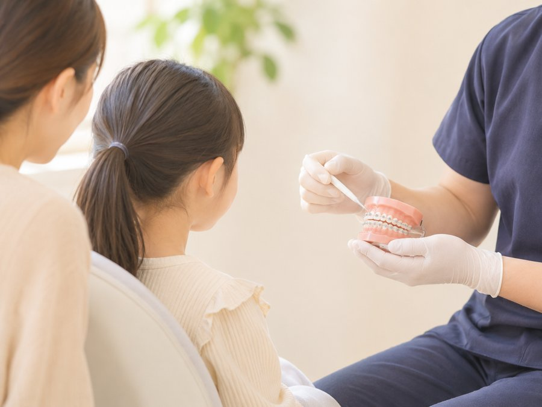

「子どもが歯医者を怖がって、口を開けてくれない」「乳歯の虫歯は生え変わるから、様子を見てもいいのかな」と迷う保護者の方は少なくありません。にじいろ歯科おとなこども矯正歯科の小児歯科では、初めて来院されるお子さんには、まず歯医者に慣れていただくことから始めています。目標は、お子さんに「歯医者は怖い所ではない」と思ってもらうことです。このページでは、当院で行っている予防と虫歯治療、定期検診のキッズクラブ、費用と受診の流れをご紹介します。
豊橋市の小児歯科へ相談したい子どもの歯の状態
お子さんは、歯の痛みや違和感を言葉でうまく伝えられないことがよくあります。仕上げ磨きのときや食事中に、次のような様子がないか見てみてください。
- 歯の表面に白く濁った部分や、茶色・黒っぽい部分がある
- 冷たいものや甘いものを「しみる」と言う
- 片側の歯ばかりで噛んでいる、食べるのに時間がかかる
- 歯ぐきが赤く腫れている、歯磨きで血が出る
- 仕上げ磨きを嫌がり、十分に磨けていない日が続いている
- 歯並びや噛み合わせが気になる
- 歯が生えてきたが、まだ一度も歯医者でお口を見てもらったことがない
乳歯の虫歯は進み方が速く、痛みを訴えるころには歯の神経の近くまで広がっていることもあります。早い段階で見つかれば、削る量の少ない処置や予防の工夫で様子を見られる場合も少なくありません。仕上げ磨きのときは明るい場所でお口の中をのぞき、奥歯の溝や歯と歯の間に色の変化がないかを見てみてください。
乳歯の虫歯が子どもに起こりやすい理由
同じように歯磨きをしていても、子どもの歯は大人の歯より虫歯になりやすい特徴があります。どこが弱いのかを知っておくと、仕上げ磨きで重点的に見る場所が分かります。
乳歯は歯の表面がやわらかく薄い
乳歯は永久歯に比べて、歯の表面を覆う硬い層（エナメル質）と、その内側にある層（象牙質）が薄く、酸に溶けやすい性質を持っています。虫歯ができると内部へ広がるまでが早く、気づいたときには大きな穴になっていることも珍しくありません。
生えたばかりの永久歯もまだ弱い
6歳頃から生えてくる奥歯の永久歯（6歳臼歯）は、生えたての時期は歯の表面が十分に硬くなっていません。奥にあって歯ブラシが届きにくく、溝も深いため、磨き残しが起こりやすい歯です。当院では、仕上げ磨きを10歳頃まで続けることをおすすめしています。
乳歯の虫歯は永久歯にも関わる
乳歯は、食べ物をしっかり噛む、言葉をはっきり発音するといった毎日の働きを担うだけでなく、その下で育つ永久歯の通り道にもなっています。乳歯の虫歯を放置すると、お口の中に虫歯菌が多い状態が続き、生えてきた永久歯も虫歯になりやすくなります。乳歯を早く失うと永久歯が生えるすき間が狭くなり、歯並びに影響することもあります。
にじいろ歯科の小児歯科で行っていること
当院の小児歯科では、予防から治療までをお子さんの成長に合わせて行っています。生涯にわたって健康な歯で過ごしてもらえるよう、無理な治療は行っていません。
歯医者に慣れることから始めます
初めて来院されるお子さんには、すぐに治療に入るのではなく、まず歯医者という場所に慣れていただくことから始めます。進め方はお子さんの年齢や様子に合わせてご相談します。

お子さんと保護者の方へのブラッシング指導
診療では、お子さん本人の歯磨きの練習に加えて、保護者の方の仕上げ磨きのコツもお伝えします。年齢や歯の生え方によって磨き残しやすい場所は変わるため、そのときのお口に合った磨き方を一緒に確認していきます。当院の歯磨き教室でも、仕上げ磨き用の歯ブラシ、毛先が小さくまとまった1本ブラシ、デンタルフロスの3つを使い分けてお口をケアする方法をご紹介しています。

歯の質を強くするフッ素塗布
歯の表面にフッ素を塗ると、歯の質が強くなり、虫歯の予防に役立つとされています。乳歯だけでなく、生えたばかりの永久歯にも用いられる処置です。歯科医院でのフッ素塗布は、歯が生え始める生後7〜8か月頃からご相談いただけます。ご家庭でのフッ素ケアについても、お子さんの年齢や歯の本数、お口の状態を確認しながら、適した方法をご案内しています。
ご家庭でのフッ素の使い方について詳しくはこちら → 1歳から始めるフッ素ケア
乳歯の虫歯治療
虫歯が見つかった場合は、進み具合を確認したうえで治療方法をご説明します。小さな虫歯であれば、削る範囲を抑えた処置で済むこともあります。治療の進め方は、お子さんの様子を見ながら保護者の方と相談して決めていきます。
歯並びが気になるときは小児矯正と連携
歯並びや噛み合わせが気になる場合は、小児矯正もご案内できます。永久歯に生え変わり始める6歳頃からの「Ⅰ期治療」では、拡大床やマウスピース型の装置で顎のバランスを整えます。まだ乳歯があるお子さんには、マウスピース型装置を数か月間、昼間1時間と就寝時に使う「予防コース」もご用意しています。永久歯がそろったあとに必要があれば「Ⅱ期治療」へ進み、ワイヤー装置で約2〜3年かけて歯並びを仕上げます。矯正相談は無料です。装置や症例は矯正歯科の診療案内でご紹介しています。
小児歯科の定期検診「キッズクラブ」と歯磨き教室
虫歯は、痛みが出る前に見つけて対処できるかどうかで、その後の治療の大きさが変わります。当院では、定期検診のキッズクラブと、乳児期から参加できる歯磨き教室で、お子さんの歯を見守っています。
定期検診とフッ素塗布を行うキッズクラブ
キッズクラブは、お子さんが健康的な歯であり続けてほしいという思いから設立した、当院の定期検診プログラムです。定期的な検診とフッ素塗布で、虫歯の予防と早期発見を目指します。検診の間隔はお口の状態によって変わりますが、一般的には3〜6か月に1回程度が目安です。虫歯がない時期から通っていただくと、歯医者を「歯をチェックしてもらう場所」として受け止めてもらいやすくなります。対象年齢・通院の間隔・費用・お申し込み方法は、ご来院時にご説明します。

生後4か月から始める歯磨き教室
歯が生える前の時期から参加できる、生後4か月からの歯磨き教室を開催しています。参加費は1回1組1,000円（税込）、所要時間は約1時間30分で、先着順です。歯磨きの方法だけでなく、フッ素の選び方や仕上げ磨きのコツも親子で練習できるのが特徴です。開催日程は当院ホームページの新着情報でお知らせしています。
教室の内容について詳しくはこちら → 生後4か月から始める歯磨き教室
豊橋市の小児歯科の費用｜保険診療と自費診療
お子さんの虫歯治療は、健康保険が適用される保険診療です。豊橋市の子ども医療費助成の対象になる場合は、窓口でのご負担が軽くなります。フッ素塗布や定期検診の費用は内容によって異なるため、ご来院時にご説明します。
一方、小児矯正は健康保険が適用されない自費診療です。当院の小児矯正の費用は次のとおりです（いずれも税込）。
| 矯正相談 | 無料 |
|---|---|
| 資料採取（治療計画を立てるための検査） | 33,000円 |
| 予防コース | 55,000円 |
| Ⅰ期治療 | 385,000円 |
| Ⅱ期治療 | 715,000円〜770,000円（Ⅰ期から移行の場合は差額のみ） |
| 矯正抜歯 | 5,500円/歯（投薬含む） |
このほか、通院ごとに処置料（4,400円〜5,500円、別途消費税）がかかり、お支払いは最大20回の分割にも対応しています。
矯正装置を付けた直後は、痛みや違和感が出ることがあります。装置の使用時間が守れないと、歯が予定どおりに動かない場合もあります。治療後は歯が元の位置へ戻ろうとする（後戻り）ため、保定の期間が必要です。装置の周りは汚れがたまりやすく、虫歯への注意も欠かせません。治療期間が予想より延びる場合があり、期間や効果には個人差があります。
にじいろ歯科の小児歯科を受診する流れ
初めての方も、次の流れで受診いただけます。お子さんの体調や機嫌がよい時間帯に予約していただくと、落ち着いて受診しやすくなります。
-
WEB予約またはお電話でご予約
ホームページの「WEB予約・お問い合わせ」、またはお電話（0532-54-2511）でご予約ください。気になる症状や、歯医者が苦手なことなどがあれば、予約の際にお知らせいただけると準備がしやすくなります。
-
お話を伺い、お口の状態を確認
保護者の方から、気になっていることや普段の歯磨きの様子を伺います。そのうえで、お子さんのペースに合わせてお口の中を確認していきます。
-
予防・治療の内容をご説明
お口の状態をもとに、ブラッシング指導やフッ素塗布、虫歯がある場合の治療の進め方をお話しします。治療を始めるのは、内容にご納得いただいてからです。
-
キッズクラブで定期検診
治療が終わったあとも、キッズクラブの定期検診とフッ素塗布で歯の状態を見守ります。
診療時間とアクセス
月・火・水・金曜日の診療は午前9時〜13時と午後14時〜18時、土曜日は午前9時〜12時30分と午後13時30分〜17時で、木曜・日曜・祝日は休診です。豊橋駅から車で約5分、オートバックスの奥にあり、駐車場は6台分ご用意しています。入り口にはスロープがあり、院内はベビーカーのままでも移動できます。
豊橋市の小児歯科でよくある質問
何歳から歯医者に通えますか？
歯が生え始める生後7〜8か月頃から、フッ素塗布などのご相談をお受けしています。歯が生える前でも、生後4か月からは当院の歯磨き教室に参加いただけます。当院では、できれば歯医者デビューの前に歯磨き教室へ参加していただくことをおすすめしています。
子どもが泣いてしまっても大丈夫ですか？
初めての場所で泣いてしまうのは、小さなお子さんにはよくあることです。当院では無理な治療は行わず、まず歯医者に慣れていただくことを大切にしています。
歯医者を嫌がる子に、家庭でできることはありますか？
「歯医者さんに連れて行くよ」と叱るときの言葉に使ったり、「何もしないよ」とうそをついて連れてきたりすると、歯医者への苦手意識が強くなりがちです。来院前は「歯を数えてもらおうね」など、これから行うことを短く伝えてください。終わったあとは、口を開けられたことなど、できたことをほめてあげるのがおすすめです。
診療中、保護者は付き添えますか？
豊橋市で子どもの歯医者をお探しの方はにじいろ歯科おとなこども矯正歯科へ
子どもの歯は虫歯が進むのが速い一方で、早めに見つければ処置が小さく済むこともあります。当院の小児歯科では、まず歯医者に慣れていただくことを大切にしながら、予防から乳歯の虫歯治療、キッズクラブでの定期検診まで行っています。「歯医者を怖がらないか心配」という段階でも構いません。WEB予約またはお電話（0532-54-2511）で、お気軽にご予約ください。